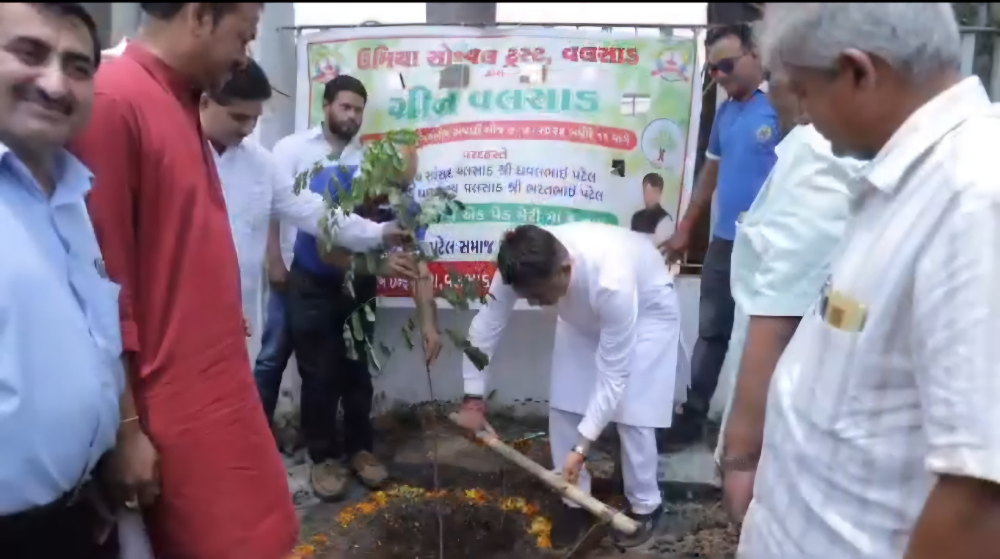
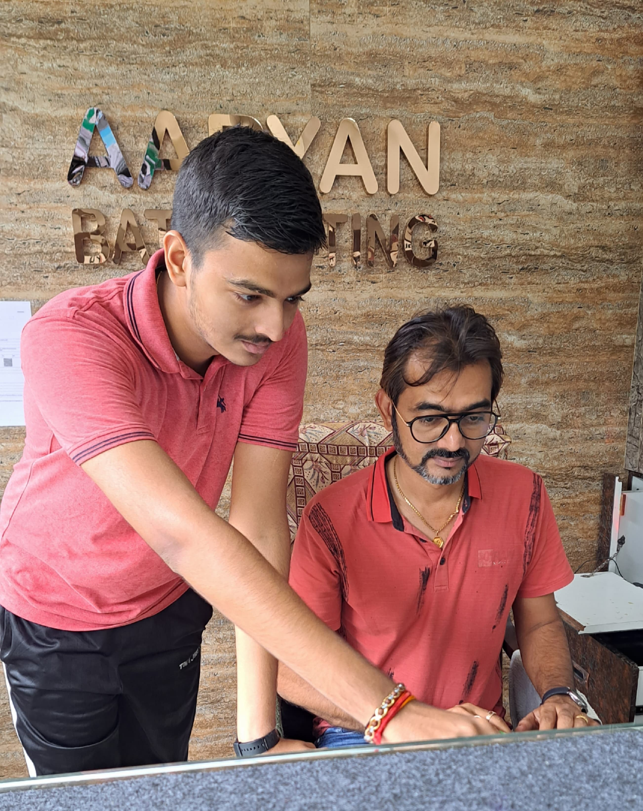
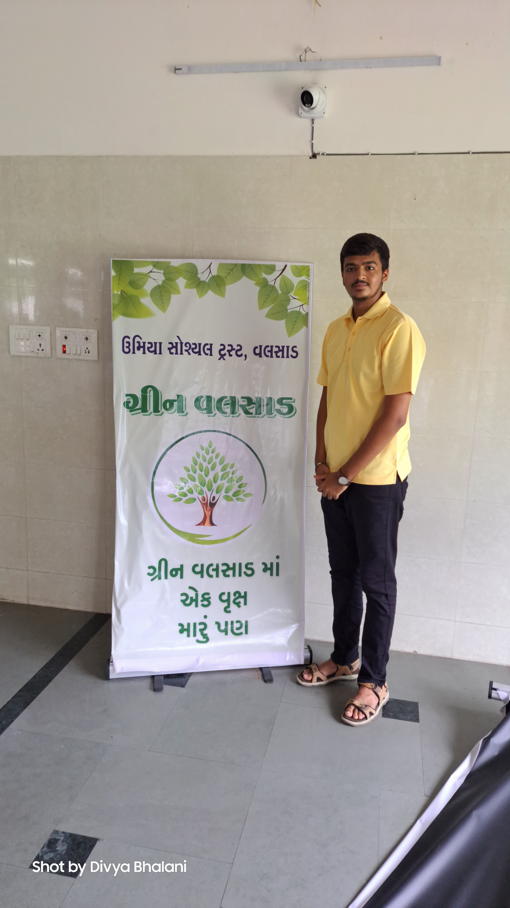

During my rural internship with Umiya Social Trust, I was part of the Green Valsad Project, an initiative aimed at environmental sustainability through mass tree plantation.
The goal was to plant over 4,000 trees across the Valsad district, involving local schools, Gram Panchayats, and volunteers. I contributed by mapping plantation sites, coordinating volunteers, and organizing awareness events — including tree-naming ceremonies with children.



The project not only improved green cover but also raised awareness of climate issues in rural areas. It was a powerful example of how community-driven efforts can make a lasting environmental impact.